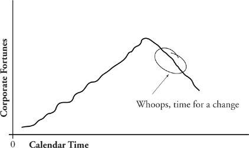

24
Timing of Change
To every thing,
Turn, turn, turn,
There is a season,
Turn, turn, turn,
And a time to every purpose under heaven.
—The Byrds (with help from Ecclesiastes)
IF TURNING (changing) the organization is your particular charge, you’re going to need a market timer’s sense of the right and the wrong moment. Doing the “right” thing at the wrong time is worse than taking no action at all.
Just to complicate the matter, conventional wisdom on timing a change tends to give you a shove in exactly the wrong direction. Conventional wisdom tells you, “If it ain’t broke, don’t fix it.” In other words, only consider changing anything when it clearly is “broke.” That leads to the situation shown in the graph on the next page.
You can’t pour change freely into the corporate equation (the way you can with an extra bonus or benefit) anytime it might be handy. There are times when change simply won’t take. And, conversely, there are opportune moments when an organization is reasonably disposed to accept change.
